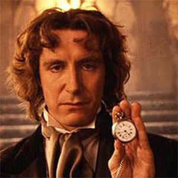

| The First Doctor |
| The Second Doctor |
| The Third Doctor |
| The Fourth Doctor |
| The Fifth Doctor |
| The Sixth Doctor |
| The Seventh Doctor |
| The Eighth Doctor |
| The Ninth Doctor |
| The Tenth Doctor |
| The Eleventh Doctor |
The Eighth Doctor
Paul McGann
 The Eighth Doctor is the eighth incarnation of the protagonist of the long-running BBC television science fiction seriesDoctor Who. He was portrayed by Paul McGann. Though he only appeared on television in one TV film, his adventures are extensively portrayed in other media.
Within the series' narrative, the Doctor is a centuries-old alien, a Time Lord from the planet Gallifrey, who travels in time and space in his TARDIS, frequently with companions.
When the Doctor is critically injured, he can regenerate his body but in doing so gains a new physical appearance and with it, a distinct new personality. McGann portrays the eighth such incarnation, a passionate, enthusiastic, and eccentric character. His only companion in the television movie is Grace Holloway (Daphne Ashbrook), a medical doctor whose surgery is responsible for triggering his regeneration.